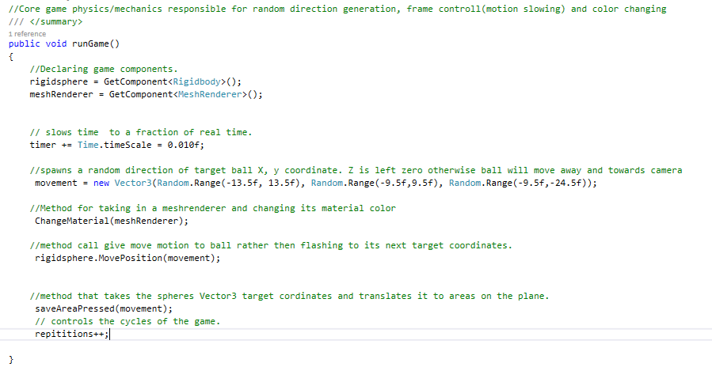

Professional Profficiency
Question 1:How often do you attend scheduled group meetings/scrums?
The reason for this rating is that I attended all the scrums except for being extremely sick on one occasion.
Being attentive is necessary for being aware of the changing requirements the group may face.
This includes new challenges and directions that arise from the sprint and scrum meetings.
Always maintaining communication with the team has enabled us to achieve good quality results without bottleneck.
However, the lack of note taking during the meetings hindered my chances of getting a perfect score.
I needed to keep notes encase that my team could miss and vital information to avoid confusion down the line.
Also for a brief time, I had strong communication with Dr Mary butler, that lead to the success of getting valuable feedback regarding the Visual Scan tool. This was also a great opportunity to improve my professional email writing.
This was also the case conversing with Martin keen regarding AYA app.
Question 2:How well did you communicate with others in your group or subgroup?
The 3.5 / 5 rating is because even though I had a strong relationship with the team, there were a few points I needed to improve upon. Due to having a strenuous work regimen and outside commitments, this held me back from being able to fully participate in some of the conversations. Hopefully, I was able to fix this promptly by always being attentive on slack while on my work breaks. However, I was able to gather more information face to face than relying on messages. Hence I needed allow myself to become more available to my team. Although, this felt like a non issue as we had a group of talented individuals that were always focussed on their objectives during approaching deadlines. Everyone was open, and embraced challenges that made the division of tasks easy. Constantly having an open line of communication with team members created a friendly work environment in which our productivity thrived. Besides the few distractions, we all put our head down and worked towards a common goal of creating quality solutions. Below shows the communication history and activity on slack.

Question 3:How well did you document your work throughout the project?
There has been some time since coding in c#, and especially when coding in a fresh language on a new platform such as Unity, it becomes a necessity to provide easy recollection of the code functionality. This was done by adding line by line code commenting, so it also makes it easier for someone to resume where I left off. In addition, the below code for handling the slowed down motion of the ball in the wander tool is relatively new and complex. This made commenting very important so that someone else can understand the logic for easier code handling.
Question 4:How well did you respond to problems or changing requirements?
The community software development group did not go through many iterations in project1.
Due to the limited scope of each task, there was little room for the projects to undergo drastic version changes.
However, the following summarizes changes that happened but are not limited to the following:
1. Modified the Visual Scan App code and added functionality to the flash tool.
2. Made cosmetic changes to the AYA app after the group meeting with Martin. Also, helped Samantha add in a credits page for copyright purposes.
3. Made database SQL insert statements, coded various methods for the IOT Database Web API, then made an app that searches inventory in the database
4. Using Unity, I coded the Wander tool of the Visual Scan Tool in VR.
Project 1 was an exciting paper, that contained many unpredictable tasks.
I needed to adapt to several platforms. It was a misconception to think a majority of my time will be coding in Android Studio.
Nevertheless, in multiple scenarios I managed to deal with problems efficiently before the due date. When delving in to the AYA App, the task seemed straight forward, however it became more complex over time. This was especially troubling when handling the large set of data members, the Health information page had. That coupled with the XML inconsistences was indeed troubling. Regardless of the adversity I was able to get AYA App activities functioning and looking decent. Due to lack of accountability for time, I put myself under further pressure. Consequently, I did not have time to fully implement the date picker. The time crunch motivated me to produce results. This was also the situation for the IOT Mobile APP.
I needed to plan my time, and muster the discipline to move on however enticing being on the verge of a solution may be.